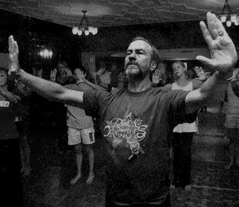

Sunday, November the 6th, 2011
back to: title, date or indexes
For no reason whatsoever, I feel it is high time we enjoyed once again dance critic Wilma Salisbury's report of the “crumpled Jesuit” Father Bob VerEecke's magnificent performance, as recorded in The Plain Dealer in July 1999. Below, a priceless snap of Father Bob putting his students through their paces.
As an introduction to the Jesuit priest's choreography, Kahn performed Overwhelmed, an expressionistic evocation of a dark emotional state that suggested sacred dance only in a few gestures of prayer. Set to a recording of prepared piano music by John Cage, the brief piece ended with the exhausted dancer lying in a heap as the stage darkened. When the lights came up, Kahn had disappeared, and VerEecke had taken her place in the same crumpled position. Rising from the floor, he cried out to God, ran around the periphery of the stage and pounded his fists against the rear wall. His cries of the heart were picked up and developed in lyrical movements by ten dancers who had learned the graceful choreography in VerEecke's workshop.

Hooting Yard on the Air, November the 10th, 2011 : “Two Sparrows” (starts around 19:31)
Hooting Yard on the Air, November the 17th, 2016 : “Heroes In The Seaweed” (starts around 25:51)